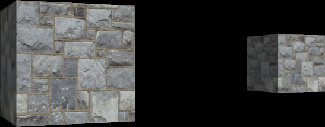

Now that we are able to render basic 3D models, the next step is going to be moving them around in our 3D scene.
We will use transforms to manipulate the location and sizing of our 3D objects in the 3D scene.
We will cover the three most popular transforms which are scaling, rotation, and translation.
To apply a transform, we first build a matrix with the transform equations, then we multiply that matrix by each vertex in the model.
This concept has already been covered when we introduced vertex shaders and we discussed how each vertex gets multiplied by a world, view, and then projection matrix
to transform that vertex from 3D space onto the 2D pixel on your screen.
Likewise, you have also already seen this in action through how we have been rotating the models in each tutorial using the rotation variable each frame.
This tutorial will now build upon that basic understanding and let us fully control each model we render in 3D space.
Transforms
Scaling transforms allow us to shrink or grow a model along any of the three axis.
This is done by creating a scale matrix with our desired x, y, and z sizing.
For rotation we create rotation matrices for each axis we want to rotate our models on.
And finally for translation we create a translation matrix with the x, y, and z location we wish to move the model to.
Now the beauty of matrices is that you don't need to send them all into the shader.
Instead, you can just multiply all the different transform matrices together and it will create a single matrix which will do all of the combined transformations!
However, note that the order of multiplying matrices together is crucial; if you do it in the wrong order, you will place the model somewhere you probably weren't expecting it to be.
The correction order of multiplying matrices for the three main types of transformation we are performing in this tutorial is: 1 - Scale, 2 - Rotation, 3 - Translation, or SRT for a shorter abbreviation.
To help remember this order it is easiest by just thinking about the model in the 3D world.
It first starts by being located at the origin of our 3D scene at 0, 0, 0.
Now before moving it anywhere we first scale it and make it the overall size we wish it to be.
Once it is scaled, we then rotate it so that it will be oriented in the direction we want it to face.
Now that it is both scaled and rotated, we can move it to the final location in the 3D world by using translation.
That will give us a scaled, rotated, and 3D placed model in our 3D world.
So, remember those steps and you will always remember the order of multiplying your matrices to achieve that result.
In this tutorial we will do two transformation examples with the 3D model from the last tutorial.
The first transformation will be a rotation and a translation.
The second transformation will be a scale, rotation, and a translation.
So, let's take a look at how to do those transforms.
We will only need to make changes to the ApplicationClass for this tutorial.
Applicationclass.h
The header for the ApplicationClass will stay the same for this tutorial.
////////////////////////////////////////////////////////////////////////////////
// Filename: applicationclass.h
////////////////////////////////////////////////////////////////////////////////
#ifndef _APPLICATIONCLASS_H_
#define _APPLICATIONCLASS_H_
/////////////
// GLOBALS //
/////////////
const bool FULL_SCREEN = false;
const bool VSYNC_ENABLED = true;
const float SCREEN_NEAR = 0.3f;
const float SCREEN_DEPTH = 1000.0f;
///////////////////////
// MY CLASS INCLUDES //
///////////////////////
#include "inputclass.h"
#include "openglclass.h"
#include "modelclass.h"
#include "cameraclass.h"
#include "lightshaderclass.h"
#include "lightclass.h"
////////////////////////////////////////////////////////////////////////////////
// Class Name: ApplicationClass
////////////////////////////////////////////////////////////////////////////////
class ApplicationClass
{
public:
ApplicationClass();
ApplicationClass(const ApplicationClass&);
~ApplicationClass();
bool Initialize(Display*, Window, int, int);
void Shutdown();
bool Frame(InputClass*);
private:
bool Render(float);
private:
OpenGLClass* m_OpenGL;
ModelClass* m_Model;
CameraClass* m_Camera;
LightShaderClass* m_LightShader;
LightClass* m_Light;
};
#endif
Applicationclass.cpp
////////////////////////////////////////////////////////////////////////////////
// Filename: applicationclass.cpp
////////////////////////////////////////////////////////////////////////////////
#include "applicationclass.h"
ApplicationClass::ApplicationClass()
{
m_OpenGL = 0;
m_Model = 0;
m_Camera = 0;
m_LightShader = 0;
m_Light = 0;
}
ApplicationClass::ApplicationClass(const ApplicationClass& other)
{
}
ApplicationClass::~ApplicationClass()
{
}
bool ApplicationClass::Initialize(Display* display, Window win, int screenWidth, int screenHeight)
{
char modelFilename[128];
char textureFilename[128];
bool result;
// Create and initialize the OpenGL object.
m_OpenGL = new OpenGLClass;
result = m_OpenGL->Initialize(display, win, screenWidth, screenHeight, SCREEN_NEAR, SCREEN_DEPTH, VSYNC_ENABLED);
if(!result)
{
cout << "Error: Could not initialize the OpenGL object." << endl;
return false;
}
// Create and initialize the camera object.
m_Camera = new CameraClass;
Move the camera back another 5 units so that we can see both cubes easily.
m_Camera->SetPosition(0.0f, 0.0f, -10.0f);
m_Camera->Render();
// Set the file name of the model.
strcpy(modelFilename, "../Engine/data/cube.txt");
// Set the file name of the texture.
strcpy(textureFilename, "../Engine/data/stone01.tga");
// Create and initialize the model object.
m_Model = new ModelClass;
result = m_Model->Initialize(m_OpenGL, modelFilename, textureFilename, false);
if(!result)
{
cout << "Error: Could not initialize the model object." << endl;
return false;
}
// Create and initialize the light shader object.
m_LightShader = new LightShaderClass;
result = m_LightShader->Initialize(m_OpenGL);
if(!result)
{
cout << "Error: Could not initialize the light shader object." << endl;
return false;
}
// Create and initialize the light object.
m_Light = new LightClass;
m_Light->SetDiffuseColor(1.0f, 1.0f, 1.0f, 1.0f);
m_Light->SetDirection(0.0f, 0.0f, 1.0f);
return true;
}
void ApplicationClass::Shutdown()
{
// Release the light object.
if(m_Light)
{
delete m_Light;
m_Light = 0;
}
// Release the light shader object.
if(m_LightShader)
{
m_LightShader->Shutdown();
delete m_LightShader;
m_LightShader = 0;
}
// Release the model object.
if(m_Model)
{
m_Model->Shutdown();
delete m_Model;
m_Model = 0;
}
// Release the camera object.
if(m_Camera)
{
delete m_Camera;
m_Camera = 0;
}
// Release the OpenGL object.
if(m_OpenGL)
{
m_OpenGL->Shutdown();
delete m_OpenGL;
m_OpenGL = 0;
}
return;
}
bool ApplicationClass::Frame(InputClass* Input)
{
static float rotation = 360.0f;
bool result;
// Check if the escape key has been pressed, if so quit.
if(Input->IsEscapePressed() == true)
{
return false;
}
// Update the rotation variable each frame.
rotation -= 0.0174532925f * 1.0f;
if(rotation <= 0.0f)
{
rotation += 360.0f;
}
// Render the graphics scene.
result = Render(rotation);
if(!result)
{
return false;
}
return true;
}
The Render function is where our transforms will occur in this tutorial.
We first start by adding some new matrices that we will use to build our transforms with.
bool ApplicationClass::Render(float rotation)
{
float worldMatrix[16], viewMatrix[16], projectionMatrix[16], rotateMatrix[16], translateMatrix[16], scaleMatrix[16], srMatrix[16];
float diffuseLightColor[4], lightDirection[3];
bool result;
// Clear the buffers to begin the scene.
m_OpenGL->BeginScene(0.0f, 0.0f, 0.0f, 1.0f);
// Get the world, view, and projection matrices from the opengl and camera objects.
m_OpenGL->GetWorldMatrix(worldMatrix);
m_Camera->GetViewMatrix(viewMatrix);
m_OpenGL->GetProjectionMatrix(projectionMatrix);
// Get the light properties.
m_Light->GetDirection(lightDirection);
m_Light->GetDiffuseColor(diffuseLightColor);
This will be our first transform.
We will build our rotation matrix for rotation around the Y axis using the rotation variable.
Then we build our translation matrix which will move the cube over to the left by 2 units.
Once we have our two matrices built, we multiply them together in the correct order (SRT) which will be rotation first and then translation last to create our final world matrix which has the combined transforms.
Then we send just the world matrix into the shader along with the regular view and projection matrices to rotate and translate our cube model when it is rendered by the light shader.
m_OpenGL->MatrixRotationY(rotateMatrix, rotation); // Build the rotation matrix.
m_OpenGL->MatrixTranslation(translateMatrix, -2.0f, 0.0f, 0.0f); // Build the translation matrix.
// Multiply them together to create the final world transformation matrix.
m_OpenGL->MatrixMultiply(worldMatrix, rotateMatrix, translateMatrix);
// Set the light shader as the current shader program and set the matrices and light values that it will use for rendering.
result = m_LightShader->SetShaderParameters(worldMatrix, viewMatrix, projectionMatrix, lightDirection, diffuseLightColor);
if(!result)
{
return false;
}
// Set the texture for the model in the pixel shader.
m_Model->SetTexture(0);
// Render the model.
m_Model->Render();
Now for the second transform we will be add scaling as well.
We are going to uniformly shrink down the cube by half, and then apply a rotation and translation as well.
So, we start by building a scale matrix using 0.5 for all three axis.
Then we build our rotation matrix the same as above using the Y rotation variable.
And then we build our translation matrix moving this cube the other direction by going 2 units to the right.
Once we have all three matrices, we combine them in the correct SRT order (scale, rotate, translate) by doing two multiplications and storing all our transforms in the final world matrix.
Then we set the new world matrix in the light shader and render our cube model again to see a second cube in the scene with our desired transformations applied.
m_OpenGL->MatrixScale(scaleMatrix, 0.5f, 0.5f, 0.5f); // Build the scaling matrix.
m_OpenGL->MatrixRotationY(rotateMatrix, rotation); // Build the rotation matrix.
m_OpenGL->MatrixTranslation(translateMatrix, 2.0f, 0.0f, 0.0f); // Build the translation matrix.
// Multiply the scale, rotation, and translation matrices together to create the final world transformation matrix.
m_OpenGL->MatrixMultiply(srMatrix, scaleMatrix, rotateMatrix);
m_OpenGL->MatrixMultiply(worldMatrix, srMatrix, translateMatrix);
// Set the light shader as the current shader program and set the updated matrices and light values that it will use for rendering.
result = m_LightShader->SetShaderParameters(worldMatrix, viewMatrix, projectionMatrix, lightDirection, diffuseLightColor);
if(!result)
{
return false;
}
// Set the texture for the model in the pixel shader.
m_Model->SetTexture(0);
// Render the model.
m_Model->Render();
// Present the rendered scene to the screen.
m_OpenGL->EndScene();
return true;
}
Summary
We can now render multiple models with different transforms to scale, rotate, and translate models in our 3D world.

To Do Exercises
1. Recompile the code and run the program. You should get two rotating cubes with scale, rotate, and translation transformations applied to them. Press escape to quit.
2. Reverse the order of multiplying the rotate and translation matrices in the first transform to see its effect on the first cube we render.
Think about why matrix multiplication order is important and why what is happening now has occurred.
3. Modify the scale values in the second transform to make the cube twice as long on the X axis to form a spinning rectangle instead.
4. Make the two objects spin around each other by going around the origin of the scene.
5. Research other transforms and ways of performing those different transforms (such as Quaternions).
Source Code
Source Code and Data Files: gl4linuxtut08_src.tar.gz